%matplotlib inline
from pathlib import Path
import pandas as pd
import numpy as np
from scipy.stats import trim_mean
from statsmodels import robust
import wquantiles
import seaborn as sns
import matplotlib.pylab as pltChapter 1 - Exploratory Data Analysis
Practical Statistics for Data Scientists (Python)
- 2019 Peter C. Bruce, Andrew Bruce, Peter Gedeck
Import required Python packages.
try:
import common
DATA = common.dataDirectory()
except ImportError:
DATA = Path().resolve() / 'data'Define paths to data sets. If you don’t keep your data in the same directory as the code, adapt the path names.
AIRLINE_STATS_CSV = DATA / 'airline_stats.csv'
KC_TAX_CSV = DATA / 'kc_tax.csv.gz'
LC_LOANS_CSV = DATA / 'lc_loans.csv'
AIRPORT_DELAYS_CSV = DATA / 'dfw_airline.csv'
SP500_DATA_CSV = DATA / 'sp500_data.csv.gz'
SP500_SECTORS_CSV = DATA / 'sp500_sectors.csv'
STATE_CSV = DATA / 'state.csv'Estimates of Location
Example: Location Estimates of Population and Murder Rates
# Table 1-2
state = pd.read_csv(STATE_CSV)
print(state.head(8)) State Population Murder.Rate Abbreviation
0 Alabama 4779736 5.7 AL
1 Alaska 710231 5.6 AK
2 Arizona 6392017 4.7 AZ
3 Arkansas 2915918 5.6 AR
4 California 37253956 4.4 CA
5 Colorado 5029196 2.8 CO
6 Connecticut 3574097 2.4 CT
7 Delaware 897934 5.8 DECompute the mean, trimmed mean, and median for Population. For mean and median we can use the pandas methods of the data frame. The trimmed mean requires the trim_mean function in scipy.stats.
state = pd.read_csv(STATE_CSV)
print(state['Population'].mean())6162876.3print(trim_mean(state['Population'], 0.1))4783697.125print(state['Population'].median())4436369.5Weighted mean is available with numpy. For weighted median, we can use the specialised package wquantiles (https://pypi.org/project/wquantiles/).
print(state['Murder.Rate'].mean())4.066print(np.average(state['Murder.Rate'], weights=state['Population']))4.445833981123393print(wquantiles.median(state['Murder.Rate'], weights=state['Population']))4.4Estimates of Variability
# Table 1-2
print(state.head(8)) State Population Murder.Rate Abbreviation
0 Alabama 4779736 5.7 AL
1 Alaska 710231 5.6 AK
2 Arizona 6392017 4.7 AZ
3 Arkansas 2915918 5.6 AR
4 California 37253956 4.4 CA
5 Colorado 5029196 2.8 CO
6 Connecticut 3574097 2.4 CT
7 Delaware 897934 5.8 DEStandard deviation
print(state['Population'].std())6848235.347401142Interquartile range is calculated as the difference of the 75% and 25% quantile.
print(state['Population'].quantile(0.75) - state['Population'].quantile(0.25))4847308.0Median absolute deviation from the median can be calculated with a method in statsmodels
print(robust.scale.mad(state['Population']))
print(abs(state['Population'] - state['Population'].median()).median() / 0.6744897501960817)3849876.1459979336
3849876.1459979336Percentiles and Boxplots
Pandas has the quantile method for data frames.
print(state['Murder.Rate'].quantile([0.05, 0.25, 0.5, 0.75, 0.95]))0.05 1.600
0.25 2.425
0.50 4.000
0.75 5.550
0.95 6.510
Name: Murder.Rate, dtype: float64# Table 1.4
percentages = [0.05, 0.25, 0.5, 0.75, 0.95]
df = pd.DataFrame(state['Murder.Rate'].quantile(percentages))
df.index = [f'{p * 100}%' for p in percentages]
print(df.transpose()) 5.0% 25.0% 50.0% 75.0% 95.0%
Murder.Rate 1.6 2.425 4.0 5.55 6.51Pandas provides a number of basic exploratory plots; one of them are boxplots
ax = (state['Population']/1_000_000).plot.box(figsize=(3, 4))
ax.set_ylabel('Population (millions)')
plt.tight_layout()
plt.show()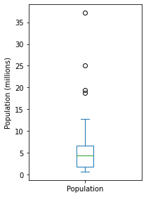
Frequency Table and Histograms
The cut method for pandas data splits the dataset into bins. There are a number of arguments for the method. The following code creates equal sized bins. The method value_counts returns a frequency table.
binnedPopulation = pd.cut(state['Population'], 10)
print(binnedPopulation.value_counts())(526935.67, 4232659.0] 24
(4232659.0, 7901692.0] 14
(7901692.0, 11570725.0] 6
(11570725.0, 15239758.0] 2
(15239758.0, 18908791.0] 1
(18908791.0, 22577824.0] 1
(22577824.0, 26246857.0] 1
(33584923.0, 37253956.0] 1
(26246857.0, 29915890.0] 0
(29915890.0, 33584923.0] 0
Name: Population, dtype: int64# Table 1.5
binnedPopulation.name = 'binnedPopulation'
df = pd.concat([state, binnedPopulation], axis=1)
df = df.sort_values(by='Population')
groups = []
for group, subset in df.groupby(by='binnedPopulation'):
groups.append({
'BinRange': group,
'Count': len(subset),
'States': ','.join(subset.Abbreviation)
})
print(pd.DataFrame(groups)) BinRange Count \
0 (526935.67, 4232659.0] 24
1 (4232659.0, 7901692.0] 14
2 (7901692.0, 11570725.0] 6
3 (11570725.0, 15239758.0] 2
4 (15239758.0, 18908791.0] 1
5 (18908791.0, 22577824.0] 1
6 (22577824.0, 26246857.0] 1
7 (26246857.0, 29915890.0] 0
8 (29915890.0, 33584923.0] 0
9 (33584923.0, 37253956.0] 1
States
0 WY,VT,ND,AK,SD,DE,MT,RI,NH,ME,HI,ID,NE,WV,NM,N...
1 KY,LA,SC,AL,CO,MN,WI,MD,MO,TN,AZ,IN,MA,WA
2 VA,NJ,NC,GA,MI,OH
3 PA,IL
4 FL
5 NY
6 TX
7
8
9 CA Pandas also supports histograms for exploratory data analysis.
ax = (state['Population'] / 1_000_000).plot.hist(figsize=(4, 4))
ax.set_xlabel('Population (millions)')
plt.tight_layout()
plt.show()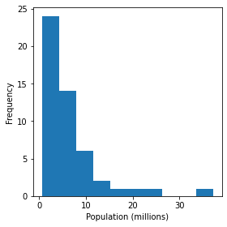
Density Estimates
Density is an alternative to histograms that can provide more insight into the distribution of the data points. Use the argument bw_method to control the smoothness of the density curve.
ax = state['Murder.Rate'].plot.hist(density=True, xlim=[0, 12],
bins=range(1,12), figsize=(4, 4))
state['Murder.Rate'].plot.density(ax=ax)
ax.set_xlabel('Murder Rate (per 100,000)')
plt.tight_layout()
plt.show()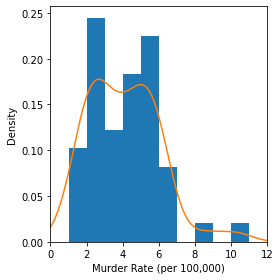
Exploring Binary and Categorical Data
# Table 1-6
dfw = pd.read_csv(AIRPORT_DELAYS_CSV)
print(100 * dfw / dfw.values.sum()) Carrier ATC Weather Security Inbound
0 23.022989 30.400781 4.025214 0.122937 42.428079Pandas also supports bar charts for displaying a single categorical variable.
ax = dfw.transpose().plot.bar(figsize=(4, 4), legend=False)
ax.set_xlabel('Cause of delay')
ax.set_ylabel('Count')
plt.tight_layout()
plt.show()
Correlation
First read the required datasets
sp500_sym = pd.read_csv(SP500_SECTORS_CSV)
sp500_px = pd.read_csv(SP500_DATA_CSV, index_col=0)# Table 1-7
# Determine telecommunications symbols
telecomSymbols = sp500_sym[sp500_sym['sector'] == 'telecommunications_services']['symbol']
# Filter data for dates July 2012 through June 2015
telecom = sp500_px.loc[sp500_px.index >= '2012-07-01', telecomSymbols]
telecom.corr()
print(telecom) T CTL FTR VZ LVLT
2012-07-02 0.422496 0.140847 0.070879 0.554180 -0.519998
2012-07-03 -0.177448 0.066280 0.070879 -0.025976 -0.049999
2012-07-05 -0.160548 -0.132563 0.055128 -0.051956 -0.180000
2012-07-06 0.342205 0.132563 0.007875 0.140106 -0.359999
2012-07-09 0.136883 0.124279 -0.023626 0.253943 0.180000
... ... ... ... ... ...
2015-06-25 0.049342 -1.600000 -0.040000 -0.187790 -0.330002
2015-06-26 -0.256586 0.039999 -0.070000 0.029650 -0.739998
2015-06-29 -0.098685 -0.559999 -0.060000 -0.504063 -1.360000
2015-06-30 -0.503298 -0.420000 -0.070000 -0.523829 0.199997
2015-07-01 -0.019737 0.080000 -0.050000 0.355811 0.139999
[754 rows x 5 columns]Next we focus on funds traded on major exchanges (sector == ‘etf’).
etfs = sp500_px.loc[sp500_px.index > '2012-07-01',
sp500_sym[sp500_sym['sector'] == 'etf']['symbol']]
print(etfs.head()) XLI QQQ SPY DIA GLD VXX USO \
2012-07-02 -0.376098 0.096313 0.028223 -0.242796 0.419998 -10.40 0.000000
2012-07-03 0.376099 0.481576 0.874936 0.728405 0.490006 -3.52 0.250000
2012-07-05 0.150440 0.096313 -0.103487 0.149420 0.239991 6.56 -0.070000
2012-07-06 -0.141040 -0.491201 0.018819 -0.205449 -0.519989 -8.80 -0.180000
2012-07-09 0.244465 -0.048160 -0.056445 -0.168094 0.429992 -0.48 0.459999
IWM XLE XLY XLU XLB XTL \
2012-07-02 0.534641 0.028186 0.095759 0.098311 -0.093713 0.019076
2012-07-03 0.926067 0.995942 0.000000 -0.044686 0.337373 0.000000
2012-07-05 -0.171848 -0.460387 0.306431 -0.151938 0.103086 0.019072
2012-07-06 -0.229128 0.206706 0.153214 0.080437 0.018744 -0.429213
2012-07-09 -0.190939 -0.234892 -0.201098 -0.035751 -0.168687 0.000000
XLV XLP XLF XLK
2012-07-02 -0.009529 0.313499 0.018999 0.075668
2012-07-03 0.000000 0.129087 0.104492 0.236462
2012-07-05 -0.142955 -0.073766 -0.142490 0.066211
2012-07-06 -0.095304 0.119865 0.066495 -0.227003
2012-07-09 0.352630 -0.064548 0.018999 0.009457 Due to the large number of columns in this table, looking at the correlation matrix is cumbersome and it’s more convenient to plot the correlation as a heatmap. The seaborn package provides a convenient implementation for heatmaps.
fig, ax = plt.subplots(figsize=(5, 4))
ax = sns.heatmap(etfs.corr(), vmin=-1, vmax=1,
cmap=sns.diverging_palette(20, 220, as_cmap=True),
ax=ax)
plt.tight_layout()
plt.show()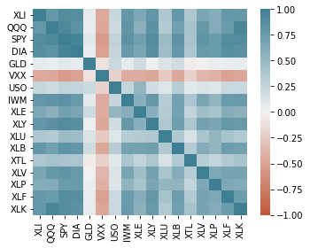
The above heatmap works when you have color. For the greyscale images, as used in the book, we need to visualize the direction as well. The following code shows the strength of the correlation using ellipses.
from matplotlib.collections import EllipseCollection
from matplotlib.colors import Normalize
def plot_corr_ellipses(data, figsize=None, **kwargs):
''' https://stackoverflow.com/a/34558488 '''
M = np.array(data)
if not M.ndim == 2:
raise ValueError('data must be a 2D array')
fig, ax = plt.subplots(1, 1, figsize=figsize, subplot_kw={'aspect':'equal'})
ax.set_xlim(-0.5, M.shape[1] - 0.5)
ax.set_ylim(-0.5, M.shape[0] - 0.5)
ax.invert_yaxis()
# xy locations of each ellipse center
xy = np.indices(M.shape)[::-1].reshape(2, -1).T
# set the relative sizes of the major/minor axes according to the strength of
# the positive/negative correlation
w = np.ones_like(M).ravel() + 0.01
h = 1 - np.abs(M).ravel() - 0.01
a = 45 * np.sign(M).ravel()
ec = EllipseCollection(widths=w, heights=h, angles=a, units='x', offsets=xy,
norm=Normalize(vmin=-1, vmax=1),
transOffset=ax.transData, array=M.ravel(), **kwargs)
ax.add_collection(ec)
# if data is a DataFrame, use the row/column names as tick labels
if isinstance(data, pd.DataFrame):
ax.set_xticks(np.arange(M.shape[1]))
ax.set_xticklabels(data.columns, rotation=90)
ax.set_yticks(np.arange(M.shape[0]))
ax.set_yticklabels(data.index)
return ec, ax
m, ax = plot_corr_ellipses(etfs.corr(), figsize=(5, 4), cmap='bwr_r')
cb = fig.colorbar(m, ax=ax)
cb.set_label('Correlation coefficient')
plt.tight_layout()
plt.show()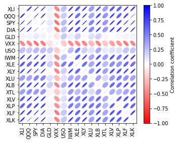
Scatterplots
Simple scatterplots are supported by pandas. Specifying the marker as $\u25EF$ uses an open circle for each point.
ax = telecom.plot.scatter(x='T', y='VZ', figsize=(4, 4), marker='$\u25EF$')
ax.set_xlabel('ATT (T)')
ax.set_ylabel('Verizon (VZ)')
ax.axhline(0, color='grey', lw=1)
ax.axvline(0, color='grey', lw=1)
plt.tight_layout()
plt.show()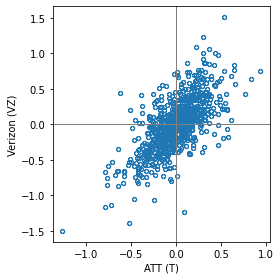
ax = telecom.plot.scatter(x='T', y='VZ', figsize=(4, 4), marker='$\u25EF$', alpha=0.5)
ax.set_xlabel('ATT (T)')
ax.set_ylabel('Verizon (VZ)')
ax.axhline(0, color='grey', lw=1)
print(ax.axvline(0, color='grey', lw=1))Line2D(_child2)Exploring Two or More Variables
Load the kc_tax dataset and filter based on a variety of criteria
kc_tax = pd.read_csv(KC_TAX_CSV)
kc_tax0 = kc_tax.loc[(kc_tax.TaxAssessedValue < 750000) &
(kc_tax.SqFtTotLiving > 100) &
(kc_tax.SqFtTotLiving < 3500), :]
print(kc_tax0.shape)(432693, 3)Hexagonal binning and Contours
Plotting numeric versus numeric data
If the number of data points gets large, scatter plots will no longer be meaningful. Here methods that visualize densities are more useful. The hexbin method for pandas data frames is one powerful approach.
ax = kc_tax0.plot.hexbin(x='SqFtTotLiving', y='TaxAssessedValue',
gridsize=30, sharex=False, figsize=(5, 4))
ax.set_xlabel('Finished Square Feet')
ax.set_ylabel('Tax Assessed Value')
plt.tight_layout()
plt.show()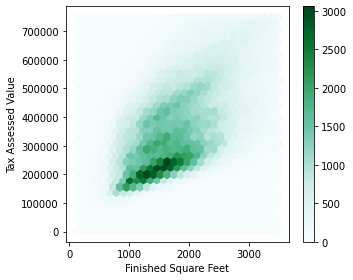
The seaborn kdeplot is a two-dimensional extension of the density plot. The calculation of the 2D-density for the full dataset takes several minutes. It is sufficient to create the visualization with a smaller sample of the dataset. With 10,000 data points, creating the graph takes only seconds. While some details may be lost, the overall shape is preserved.
fig, ax = plt.subplots(figsize=(4, 4))
sns.kdeplot(data=kc_tax0.sample(10000), x='SqFtTotLiving', y='TaxAssessedValue', ax=ax)
ax.set_xlabel('Finished Square Feet')
ax.set_ylabel('Tax Assessed Value')
plt.tight_layout()
plt.show()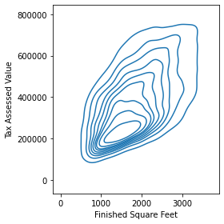
Two Categorical Variables
Load the lc_loans dataset
lc_loans = pd.read_csv(LC_LOANS_CSV)# Table 1-8(1)
crosstab = lc_loans.pivot_table(index='grade', columns='status',
aggfunc=lambda x: len(x), margins=True)
print(crosstab)status Charged Off Current Fully Paid Late All
grade
A 1562 50051 20408 469 72490
B 5302 93852 31160 2056 132370
C 6023 88928 23147 2777 120875
D 5007 53281 13681 2308 74277
E 2842 24639 5949 1374 34804
F 1526 8444 2328 606 12904
G 409 1990 643 199 3241
All 22671 321185 97316 9789 450961# Table 1-8(2)
df = crosstab.copy().loc['A':'G',:]
df.loc[:,'Charged Off':'Late'] = df.loc[:,'Charged Off':'Late'].div(df['All'], axis=0)
df['All'] = df['All'] / sum(df['All'])
perc_crosstab = df
print(perc_crosstab)status Charged Off Current Fully Paid Late All
grade
A 0.021548 0.690454 0.281528 0.006470 0.160746
B 0.040054 0.709013 0.235401 0.015532 0.293529
C 0.049828 0.735702 0.191495 0.022974 0.268039
D 0.067410 0.717328 0.184189 0.031073 0.164708
E 0.081657 0.707936 0.170929 0.039478 0.077177
F 0.118258 0.654371 0.180409 0.046962 0.028614
G 0.126196 0.614008 0.198396 0.061401 0.007187Categorical and Numeric Data
Pandas boxplots of a column can be grouped by a different column.
airline_stats = pd.read_csv(AIRLINE_STATS_CSV)
airline_stats.head()
ax = airline_stats.boxplot(by='airline', column='pct_carrier_delay',
figsize=(5, 5))
ax.set_xlabel('')
ax.set_ylabel('Daily % of Delayed Flights')
plt.suptitle('')
plt.tight_layout()
plt.show()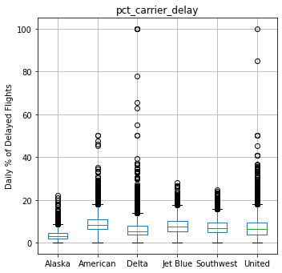
Pandas also supports a variation of boxplots called violinplot.
fig, ax = plt.subplots(figsize=(5, 5))
sns.violinplot(data=airline_stats, x='airline', y='pct_carrier_delay',
ax=ax, inner='quartile', color='white')
ax.set_xlabel('')
ax.set_ylabel('Daily % of Delayed Flights')
plt.tight_layout()
plt.show()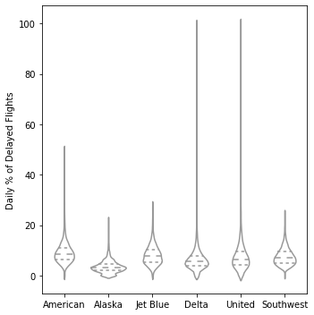
Visualizing Multiple Variables
zip_codes = [98188, 98105, 98108, 98126]
kc_tax_zip = kc_tax0.loc[kc_tax0.ZipCode.isin(zip_codes),:]
kc_tax_zip
def hexbin(x, y, color, **kwargs):
cmap = sns.light_palette(color, as_cmap=True)
plt.hexbin(x, y, gridsize=25, cmap=cmap, **kwargs)
g = sns.FacetGrid(kc_tax_zip, col='ZipCode', col_wrap=2)
g.map(hexbin, 'SqFtTotLiving', 'TaxAssessedValue',
extent=[0, 3500, 0, 700000])
g.set_axis_labels('Finished Square Feet', 'Tax Assessed Value')
g.set_titles('Zip code {col_name:.0f}')
plt.tight_layout()
plt.show()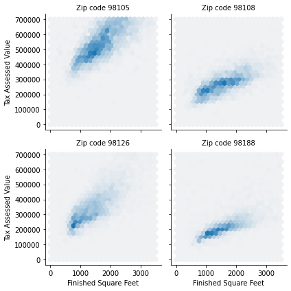